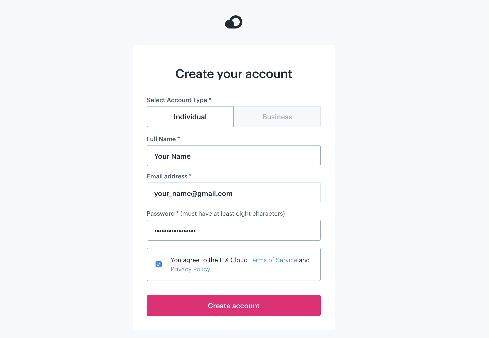
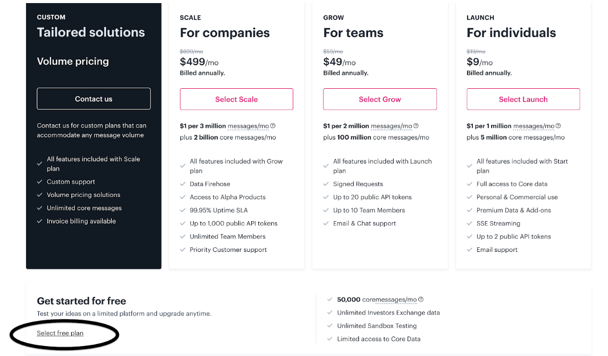
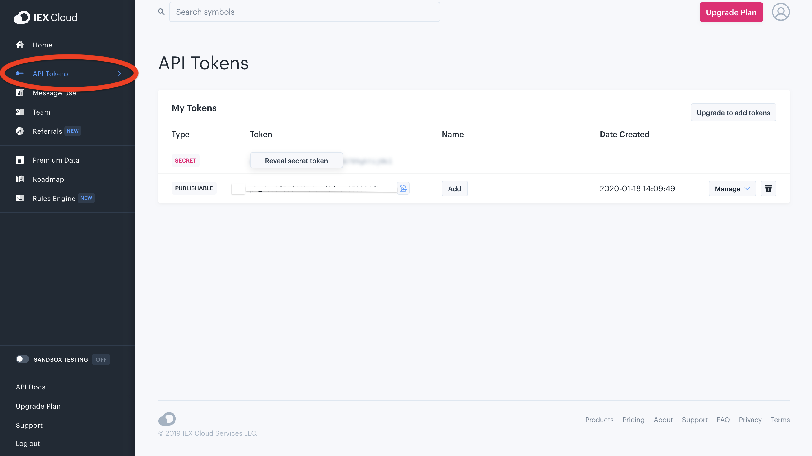

You'll need to make a free account at iexcloud.io and get an API token to be able to use the IEX API. Select the "Individual" account type, and fill out your information.
On the "select a plan" page, scroll down to the bottom and click "select free plan".
Once you've verified your email, you can click on "API Tokens" on the left panel to see your tokens.
You can use either your secret token or your publishable token - for the purposes of this homework assignment it doesn't matter. Your token should be added as a parameter to the API's url. (You'll need to add a query parameter to one of your API calls in the homework assignment - read about adding parameters to URLs here.)
Note: You have a limited number of API calls you can make with a free account. You'll start receiving 402 errors if you reach the limit - if this happens, use a different email address to make a new (free) account (A sneaky trick is to add a suffix to your email address using a "+". For example, if your email is ellie_pavlick@brown.edu, you can sign up with ellie_pavlick+1@brown.edu, ellie_pavlick+2@brown.edu, and so on. This means you don't have to make any new email accounts for this, you can just use the one you already have to generate infinitely many new free accounts.). You probably won't reach the limit, but to check if you're close, you can click the "Message Use" tab on the left side of the API console site. Free accounts give you 50,000 messages - 1 API call usually costs more than 1 message.